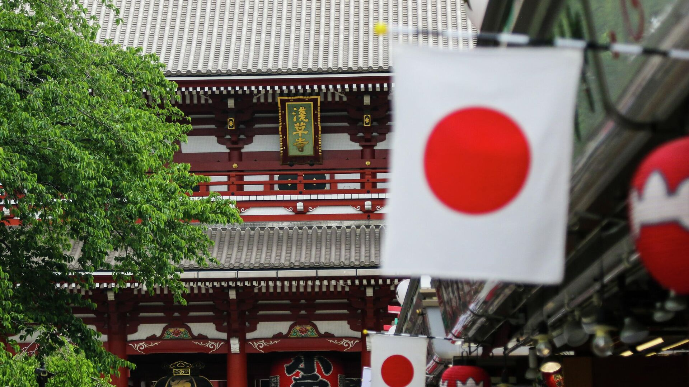
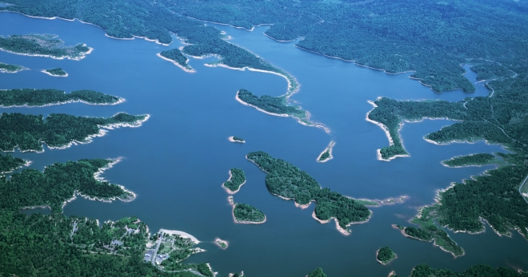

Повідомлення про Японію Джерело
Розповідь про Японію містить інформацію про цю країну. У цій країні ювелірно поєднуються сучасність і традиції. Саме це привертає до неї велику кількість туристів.
Острівна держава Японія розташована в Тихому океані, на сході від Японського моря, Південної і Північної Кореї, Китаю і Росії. Вона займає територію на півночі від Охотського моря до Тайвані і Східно-Китайського моря на півдні. В її складі 6852 острова. Найбільші з них – це Хоккайдо, Сікоку, Хонсю і Кюсю. Вони складають близько 97% від всієї площі держави.
Рельєф Японії
Японія острівна держава покрито височинами, середніми і низькими горами. На їх частку припадає більше 75% від загальної території країни. Низовини представлені окремими ділянками, які розташувалися вздовж узбережжя. Найбільша низовина – це Канто, її площa 17 000 км.
На острівній державі практично немає корисних копалин. Тут видобувають сірку, вугілля, золото і срібло, ртуть, свинець і цинк, мідь і хром, залізо і марганець. Звичайно, цих запасів мало для промислових потреб, тому більшість корисних копалин імпортуються із зарубіжних країн.
Клімат Японії
Японію відносять до температурної зоні, яка має 4 сезони. Тому її клімат змінюється низькими температурами на півночі і субтропічними на півдні. Він залежить ще і від сезонних вітрів, які взимку дмуть в напрямку з континенту, а влітку в зворотному напрямку.
Виділяють 6 кліматичних зон:- Хоккайдо. Належить до зони з низькими температурами. Характеризується морозною, довгою зимою і прохолодним літом.
- Японське море. У цій зоні сезонний північно-східний вітер приносить взимку сильні снігопади. Влітку тут теж не дуже тепло, але в іноді в зоні Японського моря спостерігаються дуже високі температури через феномен Фена.
- Зона Центральної височини. Вона являє собою острівний типовий клімат з великою температурною різницею вдень і вночі, влітку і взимку.
- Зона Внутрішнього Японського моря характеризується помірним кліматом, так як гори в регіонах Сікоку і Тюгоку затримують сезонні вітри.
- У зоні Тихого океану досить холодні зими, снігопади рідкісне явище. Літо в період сезонного південно-східного вітру вологе і жарке.
- Зона південно-західних островів відрізняється субтропічним кліматом – літо спекотне, а зима тепла. Тут випадає багато опадів внаслідок тайфунів і дощів.